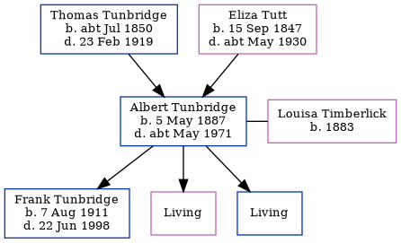

Albert Tunbridge 1887 - c1971
[ Home ] | [ Calendar ] | [ Surnames Index ] | [ Family History ]A coach painter and the youngest of 5 children of Thomas Tunbridge (a dairyman) and Eliza Tutt (a general servant)Albert Tunbridge, the first cousin twice-removed on the father's side of Nigel Horne, was born in Hougham, Kent, England on May 5, 18871,2,3,4,5,6,7, was baptized there on May 25, 1898, the same day as his brothers Frank and Walter and married Louisa Timberlick (with whom he had 3 children: Frank Albert, Ruby Emily and Dennis George, along with 2 surviving children) at St Andrew, Deal, Kent, England on Nov 19, 19108.
Throughout his life, Albert lived in several places: at his birthplace on Apr 5, 18919; in Dover, Kent, England in 19012; at 5 Eaton Road in Dover on Mar 31, 190110; at Bollo Bridge Road, Acton, London, England on Jun 19, 19213; and at 192 Southfield Road in Acton on Sep 29, 19394. Albert In 1921 he was working at Ogston Motor Works Victoria Road Acton.
He died c. May 1971 in Brent, London, England5.
Parents
- Thomas was born c. Jul 1850
- Eliza was born on Sep 15, 1847
Children
- Frank Albert was born on Aug 7, 1911
Citations
- 1891 England Census Online publication - Provo, UT, USA: The Generations Network, Inc., 2005.Original data - Census Returns of England and Wales, 1891. Kew, Surrey, England: The National Archives of the UK (TNA): Public Record Office (PRO), 1891. Data imaged from The National
- 1901 England Census Online publication - Provo, UT, USA: The Generations Network, Inc., 2005.Original data - Census Returns of England and Wales, 1901. Kew, Surrey, England: The National Archives of the UK (TNA): Public Record Office (PRO), 1901. Data imaged from the National (Relation to Head of House: Son)
- 1921 Census Of England & Wales - Findmypast (was age 34 and the head of the household)
- 1939 Register - Findmypast (was the head of the household)
- England & Wales deaths 1837-2007 - Findmypast
- Kent Baptisms - Findmypast
- Kent Marriages And Banns - Findmypast
- England & Wales Marriages 1837-2005 - Findmypast
- 1891 England, Wales & Scotland Census - Findmypast (was age 3 and the son of the head of the household)
- 1901 England, Wales & Scotland Census - Findmypast (was age 13 and the son of the head of the household)
Media
1901 England, Wales & Scotland Census - GBC/1901/0004891860
1891 England, Wales & Scotland Census - GBC/1891/0005982763
England & Wales deaths 1837-2007 - BMD/D/1971/2/AZ/001186/059
England & Wales marriages 1837-2005 - BMD/M/1910/4/AZ/000940/017
Kent, Canterbury Archdeaconry baptisms - GBPRS/CANT/B/96323295
Kent marriages and banns - GBPRS/CANT/M/97067962/1
1939 Register - TNA-R39-0670-0670G-015-24
1921 Census of England & Wales - GBC/1921/RG15/06383/0021/01
Family Tree
Generated by ged2site. Last updated on Nov 13, 2024